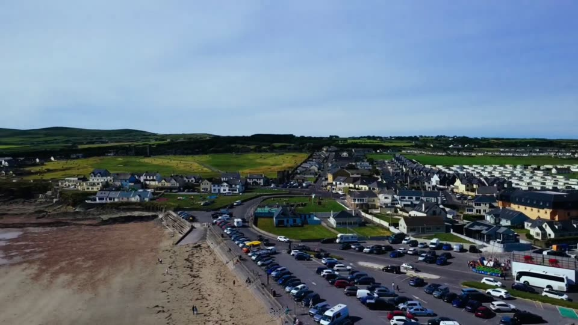

From the air
Drone footage of Ballyheigue Beach, Kerry Head and Tralee Bay.
Ballyheigue, seen differently
The beach, the dunes and the Atlantic from a few hundred feet up. Aerial footage by AOS Entertainment. Hover or tap a clip to play it.
Summer 2026 in Ballyheigue
Two short films from July and August, shot by DJ Alan O'Sullivan.
Share your own photos with #DiscoverBallyheigue or tag @discoverballyheigue on Instagram.